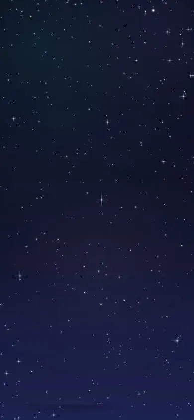
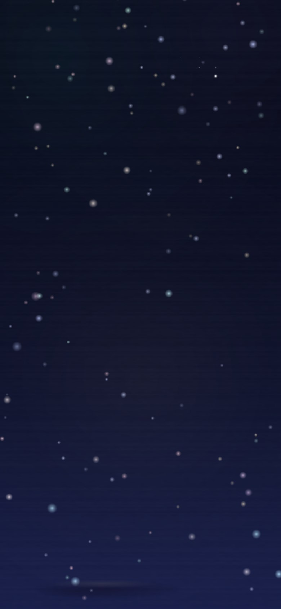
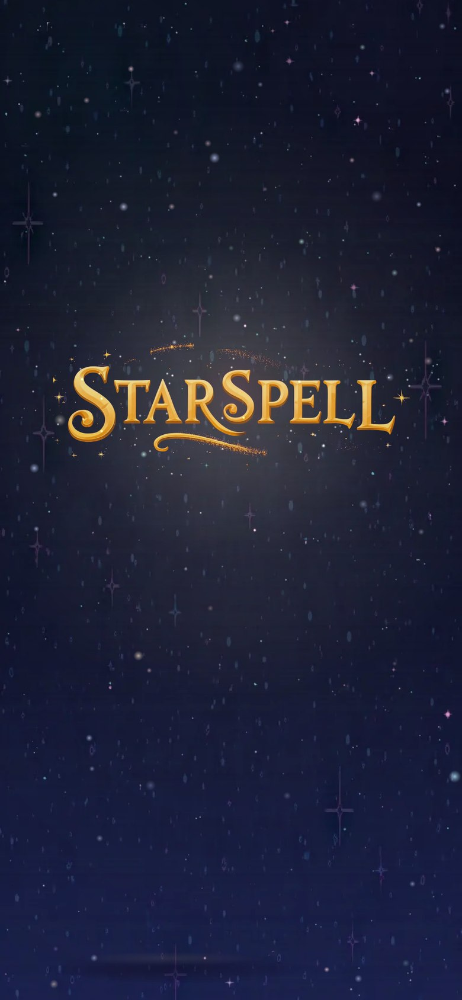
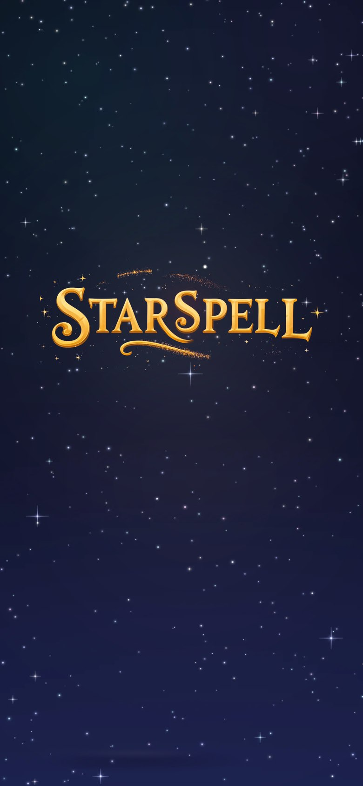
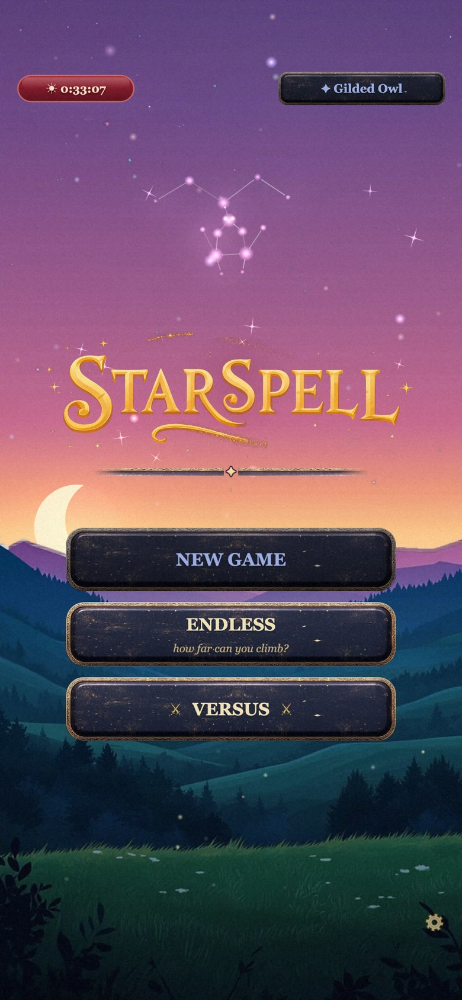
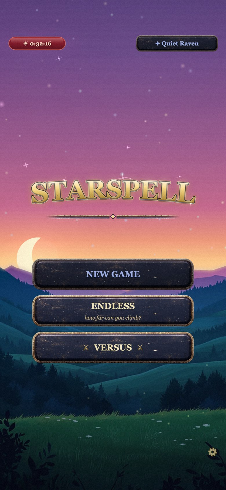
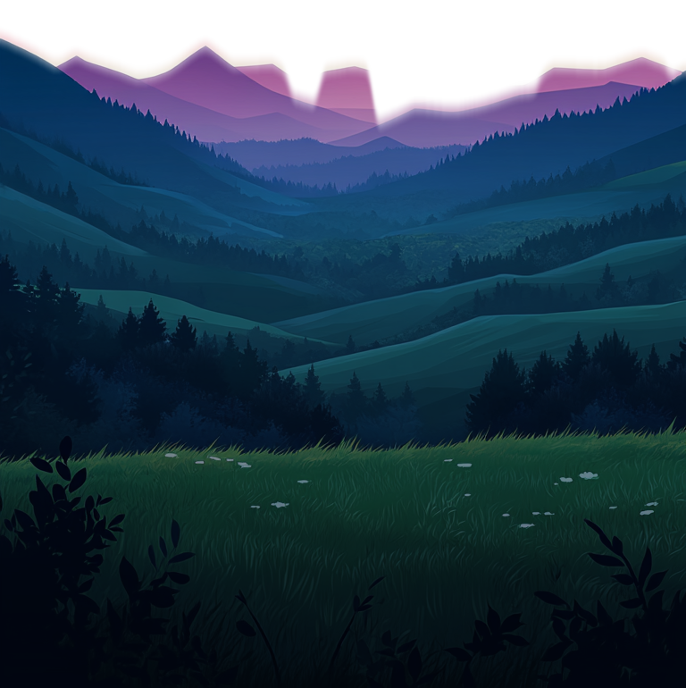

2026-10-08 · 6 painted night skies + 6 STARSPELL wordmarks · by Cowboy (Skylar's console)
Real captures from the wired build at iPhone size (390×844 @3x): S1's painted plate behind the live twinkle/parallax layer, L3's pulled text seated where the title renders, and the opening descent. The two "today" phones are the current live build, same framing, for an honest before/after.







Left: what the opening actually looks like (the live game, first frame). The meadow (right, the painted plate you like) is MJ art — but everything above it is procedural: a baked gradient plus ~230 soft-edged dot sprites scaled up as "stars". On a phone they read as faint blurry smudges on near-black — that is the complaint, and it's structural: the dot texture is a blurred disc, so no amount of tuning makes it crisp. The fix offered here: paint the whole sky column the way the meadow is painted, in the same flat-vector dusk style (every option below was fired with the meadow plate itself as the Midjourney style anchor, so the palettes match by construction).
Each sky card shows the transition test: the candidate stacked straight onto the live meadow plate. Every MJ frame grew a small dark silhouette ridge at its foot despite the prompt — that ridge is cut, per frame, just above its tallest peak (the first version of this page used one crude fixed crop, which left a black band at the seam on most frames — that band was the preview's bug, not the design's; it will NOT exist in the game). What remains is rose dusk meeting the meadow's own glow — the final cut blends the last few rows so the value step disappears entirely.
Pick a frame on each card — the hero and the transition test follow your pick. Chips + notes stay on this device; hit COPY VERDICTS when done. Any direction can be rerolled/upscaled cheaply — if the direction is right but the frame isn't, say so in the notes.
Only the text ships — the night backgrounds are MJ's canvas, not part of the asset. Each card now shows the pulled text: a draft alpha cut over a checkerboard, letters + their sparkles only, background gone. These pulls are automated drafts; the winner gets a hand-authored mask (stray star specks cleaned, glow edges tuned) before it touches the game. Today the title is live text (gold gradient, bevel, sheen) drawn per-language — verdict to give along with your pick: English wordmark for all languages, or painted English + the current live-text treatment for the other four tongues?
Sky winner → re-grab full-res, crop the baked ridge, de-repeat + grade the seam against the meadow
plate (MJ art is never drop-in), then a build card wires it under the existing twinkle/parallax layer. Wordmark
winner → upscale + cleanup, then a build card seats it where ssTitleTex renders today, with the
language ruling applied. Both builds fire only on your go — this page is the design round. The 12 prompts are on the
cards (“show prompt”) for rerolls.